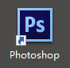
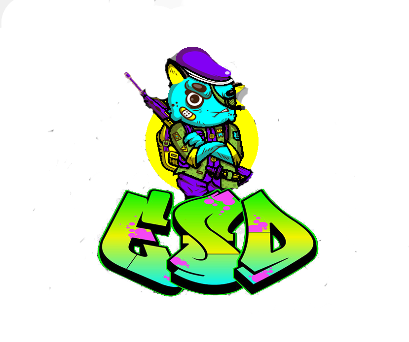

周若愚
应聘岗位：前端开发工程师
我的工作经历

奥托立夫（上海）研发有限公司
2016/06--2017/05
毕业后，作为一个实验室技术人员对公司一些新开发的产品进行安全性能的试验。
工作了一年后我意识到这不是我想要的生活，心中重燃热情的我想做出一些改变。
生活中的我

比较基础的视频编辑能力
高中的时候自学过CWALK，在论坛交流互动，拍过几个视频放在网上
接触过会声会影以及Sony Vegas
这是我高中时候拍的视频制作得粗糙，舞跳得更糟
一定的图片编辑能力
会使用  进行一些图片处理
这是我为某个电子竞技战队制作的战队队标
专业技能
jQuery JavaScript Gulp
convas Sass HTML CSS BootStrap
性能优化 Git
教育背景

毕业于江苏大学 本科
2012/07--2016/06
证书
- CET-6
- 机动车驾驶证 C1
我想说的是
可能我现在的能力不是很强，但是我觉得在某些方面还是有优势的。
希望可以给我一个机会。
我有优秀的自学能力，一些独特的创意和想法，正在学习前端开发方面的知识。
我缺少的正式前端开发工作方面的经验（可以说为零）但是我愿意尝试，并且我相信自己可以做好。
MORE
只要是自己追求的，不惜时间也感觉快乐。
主要兴趣集中在前端开发，或是没事写点东西，贡献歌词翻译。
热爱生活，热爱coding，学过街舞。喜欢篮球、健身。